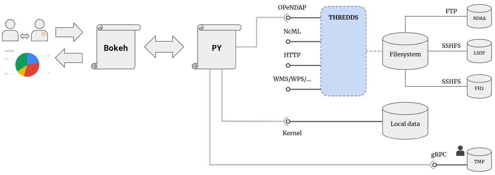

class: center, middle # Data Visualisation and Compression ## Overview of current projects at SCC MOD Meeting on 20 Nov. 2020 .white[asdasd] https://s.kit.edu/modmeeting --- # Agenda **An overview of the projects I am involved with in three steps** 1. High altitude overview of projects 2. Description of most interesting projects 3. Deep dive into individual projects - Data Visualisation - Data Compression .right[ <img src="https://upload.wikimedia.org/wikipedia/commons/e/ec/Down_the_Rabbit_Hole.png" height="390"> ] --- # Overview of Projects ## .white[Role] .left-column-big[ - MI, Entropy and Pearson (IPD) - EOSC Synergy (Ozone) - Mattermost administration - Gitlab administration - Python Working Group - AI/ML Ozone initalisation - AI/ML Clouds - NetCDF/Zarr transformation ] .rigth-column[ - BMBF/MESRI call - HAICU call (ABCDE) - IFU/Data Mgmt collaboration - WebGL vs. WebGPU - Native ICON visualisation - Lossy Compression (ERA5) ] --- # Overview of Projects ## Role: .gray[Support] and .green[Lead] .left-column-big[ - .gray[**MI, Entropy and Pearson (IPD)**] - .gray[**EOSC Synergy (Ozone)**] - .green[Mattermost administration] - .green[Gitlab administration] - .green[Python Working Group] - .green[AI/ML Ozone initalisation] - .green[AI/ML Clouds] - .green[NetCDF/Zarr transformation] ] .rigth-column[ - .green[BMBF/MESRI call] - .green[HAICU call (ABCDE)] - .green[IFU/Data Mgmt collaboration] - .green[WebGL vs. WebGPU] - .green[Native ICON visualisation] - .green[Lossy Compression (ERA5)] ] --- # Overview of Projects ## Role: .gray[Administrative & Organisational task] .left-column-big[ - .gray[MI, Entropy and Pearson (IPD)] - .gray[EOSC Synergy (Ozone)] - .gray[**Mattermost administration**] - .gray[**Gitlab administration**] - .gray[**Python Working Group**] - .green[AI/ML Ozone initalisation] - .green[AI/ML Clouds] - .green[NetCDF/Zarr transformation] ] .rigth-column[ - .green[BMBF/MESRI call] - .green[HAICU call (ABCDE)] - .green[IFU/Data Mgmt collaboration] - .green[WebGL vs. WebGPU] - .green[Native ICON visualisation] - .green[Lossy Compression (ERA5)] ] --- # Overview of Projects ## Role: .gray[student projects not yet started] .left-column-big[ - .gray[MI, Entropy and Pearson (IPD)] - .gray[EOSC Synergy (Ozone)] - .gray[Mattermost administration] - .gray[Gitlab administration] - .gray[Python Working Group] - .gray[**AI/ML Ozone initalisation**] - .gray[**AI/ML Clouds**] - .gray[**NetCDF/Zarr transformation**] ] .rigth-column[ - .green[BMBF/MESRI call] - .green[HAICU call (ABCDE)] - .green[IFU/Data Mgmt collaboration] - .green[WebGL vs. WebGPU] - .green[Native ICON visualisation] - .green[Lossy Compression (ERA5)] ] --- # Description of Most Interesting Projects ## .white[student projects not yet started] - .green[BMBF/MESRI call] - .green[HAICU call (ABCDE)] - .green[IFU/Data Mgmt collaboration] - .green[WebGL vs. WebGPU] - .green[Native ICON visualisation] - .green[Lossy Compression (ERA5)] --- # BMBF/MESRI call - Bundesministerium f√ºr Bildung und Forschung (BMBF) - Ministre de l'Enseignement sup√©rieur, de la Recherche et de l'Innovation (MESRI) - Brokerage event this week: Tue, 17 Nov 2020 - Call for Proposals - **University**: 2 entities (DE, FR); 400k Euro; 4 years - **Industry**: 4 entities (2x DE, 2x FR); 800k Euro; 3 years .center[ <img src="https://cache.media.enseignementsup-recherche.gouv.fr/image/Mediatheque/06/4/MESRI_2020_header_1249064.png" height="130"> <img src="https://upload.wikimedia.org/wikipedia/commons/thumb/5/5c/BMBF_Logo.svg/1200px-BMBF_Logo.svg.png" height="168"> ] --- # HAICU call - Helmholtz Artifical Intelligence Cooperation Unit (HAICU) - "High risk, high gain" - Collaboration between two or more Helmholtz centres - 200k Euro +100% own contribution - 3 years - Deadline: 1st Dec 2020 .white[asdad] .center[ <img src="https://www.helmholtz.ai/fileadmin/_processed_/b/f/csm_logo_helmholtz_ai_cf39d4dbfc.png" height="40"> ] --- # HAICU proposal: ABCDE - **A**I/ML-**B**ased **C**ompression for **D**ata at **E**xascale - Development of a lossy compression algorithm - Split the original problem in two subproblems - Instance Segmentation problem: - Split data in similar chunks - Compress each chunk separately - Use **zarr** data structure and native chunks .center[ <!-- <img src="https://raw.githubusercontent.com/zarr-developers/community/master/logos/logo2.png" height="130"> --> <img src="https://miro.medium.com/max/4096/1*nR5QCdmqUnvU2JFBu2Xa-Q.png" height="220"> ] --- # HAICU proposal: ABCDE - **A**I/ML-**B**ased **C**ompression for **D**ata at **E**xascale - Development of a lossy compression algorithm - Split the original problem in two subproblems - Path finding problem: - Use prediction-based compression - Map prediction algorithm to path-finding problem .center[ <img src="https://media.geeksforgeeks.org/wp-content/uploads/a_-search-algorithm-1.png" height="200"> ] --- # IFU / Data Mgmt collaboration - Organisation of a tech workshop - Two part event: 1. Review use cases and possible technology 2. Review of technology - **IMK-IFU:** Christof, Christian W, Christian C, Benjamin F - **IMK-ASF:** Christian S, me .center[ ] --- # WebGL vs WebGPU - **WebGL**: Established framework for 3D browser visualizations - **WebGPU**: New framework for 3D visualizations - 2 Tasks: - Comparison of both frameworks regarding: <br> ease of use, feature set, supported programming languages and browsers. - Implementation of a 3D globe with both framework. - Example: https://earth.nullschool.net .center[ <img src="https://upload.wikimedia.org/wikipedia/commons/2/25/WebGL_Logo.svg" height="120"> .white[as] <img src="https://raw.githubusercontent.com/gfx-rs/wgpu-rs/master/logo.png" height="120"> ] --- # Native ICON visualisation - **Problem** <br> Fast visualisation of ICON simulation output - **Solution** <br> Use web technologies for interactive plots - **Timeline** .center[ |Semester|Topic| |--|--| |WS18/19| Feasability Analysis| |SS19|-| |WS19/20| Make it usable: Remote Process Calls| |SS20| Extend the feature set: REACT, Multisessions | |WS20/21|-| ] --- # Native ICON visualisation (past) - Feasability Analysis (WS18/19) - Student: Max Noppel, Co-Supervisor: Jennifer - Search for possible libraries - Single criteria: Python backend - Compared libraries: Plotly, Bokeh, self-written alternative - Winner: Bokeh (but slooooow) üêå - **Added features** - Interactive plots - Aggregation across coordinate dimensions --- # Native ICON visualisation (past) - Speed up computation (WS19/20) - Student: Tom George - Search for libraries to speed up calculation and IO - Compared technologies: NFS mounts, remote process calls (gRPC) - Winner: all - **Added features** - External computation of aggregation methods - Streaming visualisation - Core component to make it usable üëÄ - C++ routines --- # Native ICON visualisation (before gRPC) |Task|1.9 GiB| 2.6 GiB|4.6 GiB| |--|--|--|--| |Loading data|3.87s|3.92s|3.93s |Main plot|0.38s|0.39s|0.40s |Agg. 1|0.54s|0.59s|0.63s |Agg. 2|18.11s|24.91s|45.5s |Agg. 3|13.86s|18.85s|48.84s .footnote[ Agg. 1: Mean value across altitudes. <br> Agg. 2: Mean value across latitude. <br> Agg. 3: Mean value across altitudes and latitudes. ] --- # Native ICON visualisation (after gRPC) |Task|1.9 GiB| 2.6 GiB|4.6 GiB| |--|--|--|--| |Loading data|.green[2.4s (3.87s)]|.green[2.41s (3.92s)]|.green[2.42s (3.93s)] |Main plot|.red[0.42s (0.38s)]|.red[0.42s (0.39s)]|.red[0.42 (0.40s)] |Agg. 1|.red[0.67s (0.54s)]|.red[0.75s (0.59s)]|.red[0.91s (0.63s)] |Agg. 2|.green[0.09s (18.11s)]|.green[0.09s (24.91s)]|.green[0.11s (45.5s)] |Agg. 3|.green[0.24s (13.86s)]|.green[0.3s (18.85s)]|.green[0.38s (48.84s)] .footnote[ Agg. 1: Mean value across altitudes. <br> Agg. 2: Mean value across latitude. <br> Agg. 3: Mean value across altitudes and latitudes. ] --- # Native ICON visualisation (current) - Extend feature set (SS20) - Student: Julian M√ºller - UX/UI changes for more intuitive usage - Used technology: REACT - **Added features** - Split of backend and frontend - Dockerize content - Multiple plots per sessions - Synchronisation of plots --- # Native ICON visualisation (current view) .center[.middle[ <img src="./ncview_icon_native.png" height="555"> ] ] --- # Native ICON visualisation (overview) .white[sdf] .center[.middle[ ] ] --- # Native ICON visualisation (tech view) .white[sdf] .center[.middle[  ] ] --- # Native ICON visualisation (tech view) ü§û .white[sdf] .center[.middle[ ] ] --- # Native ICON visualisation (future) ü§û .white[sdf] .center[.middle[ ] ] --- # Native ICON visualisation (future) .white[sdf] .center[.middle[ ] ] --- # Native ICON visualisation (future) .white[sdf] .center[.middle[ ] ] --- # Native ICON visualisation (file explorer) - No need for copy & pasting - No need to switch from terminal to browser - No need to stitch together `pwd` + `ls` - No need to remember root path .center[.middle[ <img src="https://raw.githubusercontent.com/Vestride/fancy-index/main/after.png" height="385"> ] ] --- # Native ICON visualisation (proper auth.) - Proper authentication - Current master user is `ku8837` .white[s] .center[.middle[ ] ] --- # Native ICON visualisation (proper auth.) - Proper authentication - Current master user is `ku8837` .white[s] .center[.middle[ ] ] --- # Native ICON visualisation (proper auth.) - Proper authentication - Current master user is `ku8837` .white[s] .center[.middle[ ] ] --- # AI-based lossy compression (thesis) - **Goal** <br> Apply AI/ML-based methods for lossy compression of high resolution climate data - **Co-Supervisor** - Prof. Peter Sanders (ITI) - Jun. Prof. Pascal Friederich (ITI) - **Student:** Silke Donayre - **Timeline:** 1st October 2020 - 31th March 2020 .center[.middle[ <img src="https://algo2.iti.kit.edu/img/content/ae_cycle_AE-1.png" height="185"> ] ] --- # AI-based lossy compression (thesis) Streamlining the objective for the master thesis - Lossy compression: Possible high-impact - Use available, simple and high-resolution data: ERA5 - Train pressure level data, use single level as features - After first couple tests: Autoencoder (CNN) - Concentrating on data preparation and feature extraction .center[.middle[ <img src="https://i2.wp.com/sefiks.com/wp-content/uploads/2018/03/convolutional-autoencoder.png?w=1818&ssl=1" height="215"> ] ] --- # ERA5 Data Download & Feature Extraction - Download ERA5 to LSDF - Automated tool for downloading the datasets: <br> *"start & forget"* - Easy tracking of downloads (Website) - Bigger files, than HTTP downloads from ECMWF - Calculate additionally to single level data further features: - Local time - Terminator ü§ñ - Land/Sea mask --- # ERA5 Data (11 TB) - Pressure Level Data <br> (0.25 x 0.25, 37 levels, hourly, 16 variables) - Single Level Data <br> (0.25 x 0.25, 1 level, hourly, 26 of a lot of variables) ```bash [ku8837@eos ~]$ ls /abcde/1979/11/ ERA5.pl.divergence.nc ERA5.sl.10m_v_component_of_wind.nc ERA5.pl.fraction_of_cloud_cover.nc ERA5.sl.10m_wind_gust_since_previous_post_processing.nc ERA5.pl.geopotential.nc ERA5.sl.2m_temperature.nc ERA5.pl.ozone_mass_mixing_ratio.nc ERA5.sl.cloud_base_height.nc ERA5.pl.potential_vorticity.nc ERA5.sl.evaporation.nc ERA5.pl.relative_humidity.nc ERA5.sl.high_vegetation_cover.nc ERA5.pl.specific_cloud_ice_water_content.nc ERA5.sl.instantaneous_10m_wind_gust.nc ERA5.pl.specific_cloud_liquid_water_content.nc ERA5.sl.lake_cover.nc ERA5.pl.specific_humidity.nc ERA5.sl.land_sea_mask.nc ERA5.pl.specific_rain_water_content.nc ERA5.sl.low_cloud_cover.nc ERA5.pl.specific_snow_water_content.nc ERA5.sl.low_vegetation_cover.nc ERA5.pl.temperature.nc ERA5.sl.orography.nc ERA5.pl.u_component_of_wind.nc ERA5.sl.sea_ice_cover.nc ERA5.pl.v_component_of_wind.nc ERA5.sl.sea_surface_temperature.nc ERA5.pl.vertical_velocity.nc ERA5.sl.soil_type.nc ERA5.pl.vorticity.nc ERA5.sl.surface_pressure.nc ERA5.sl.100m_u_component_of_wind.nc ERA5.sl.total_cloud_cover.nc ERA5.sl.100m_v_component_of_wind.nc ERA5.sl.total_column_ozone.nc ERA5.sl.10m_u_component_of_neutral_wind.nc ERA5.sl.total_precipitation.nc ERA5.sl.10m_u_component_of_wind.nc ERA5.sl.type_of_high_vegetation.nc ERA5.sl.10m_v_component_of_neutral_wind.nc ERA5.sl.type_of_low_vegetation.nc ``` --- # ERA5 Download Tool ```python #!/usr/bin/env python # coding: utf-8 from datarequests.era5 import ERA5PressureLevelsRequest, ERA5SingleLevelsRequest from datarequests.defaults import year, month from datarequests.variables import PRESSURE_LEVELS for v in PRESSURE_LEVELS: for y in ["1979"]: for m in month(): req = ERA5PressureLevelsRequest( variable=[v], year=[y], month=[m] ) req.send_request(f"/abcde/{y}/{m}/ERA5.pl.{v}.nc") ``` --- # ERA5 Download Tool - Written in Python - Consists of four technologies: <br> Docker, Redis (In-Memory DB), Redis Worker, RQ Dashboard (Bootstrap) - A request can be in one of several states: - **Failed**: requests are saved for 1 year - **Finished**: requests are saved for 500 seconds - **Started**: jobs are killed after 60 minutes - and **Queued**, **Scheduled**, **Deferred** .center[.middle[ <img src="https://upload.wikimedia.org/wikipedia/en/6/6b/Redis_Logo.svg" height="55"> .footnote[.white[sd]] <img src="https://python-rq.org/img/ribbon.png" height="75"> .white[sd] <img src="https://miro.medium.com/max/1024/1*9HanDsRU11ZMsgDGJwN96w.png" height="75"> .white[sd] <img src="https://www.docker.com/sites/default/files/d8/2019-07/Moby-logo.png" height="75"> ] ] --- # ERA5 Download Tool (workflow) 1. User requests downloads (by executing the script) 2. System checks history for same request 3. System queues the request 4. Idle worker nodes ask for download tasks and executes it The status of the current jobs can be checked at .pad[ .center[ http://eos.scc.kit.edu:9181/ ] ] .center[.middle[ <img src="https://upload.wikimedia.org/wikipedia/en/6/6b/Redis_Logo.svg" height="55"> .footnote[.white[sd]] <img src="https://python-rq.org/img/ribbon.png" height="75"> .white[sd] <img src="https://miro.medium.com/max/1024/1*9HanDsRU11ZMsgDGJwN96w.png" height="75"> .white[sd] <img src="https://www.docker.com/sites/default/files/d8/2019-07/Moby-logo.png" height="75"> ] ] --- # Summary - There are several great projects **in preparation**, currently **ongoing** and **just waiting** to be tackled. - **Collaborations** with colleagues from different fields can only improve our research. - Data exploration enabled through **interactive data visualisation** will be a key advantage in the future. - Hopefully the results from Silkes master thesis and ABCDE will show that **lossy data compression** is not necessarily a bad thing. **Thank you** --- class: center, middle background-image: url(Thats_all_folks.svg) background-size: cover